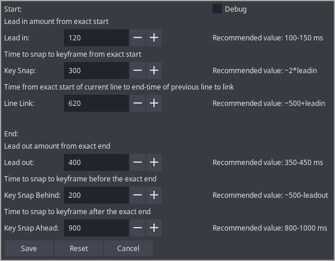

Timing Assistant
Available in Dependency Control
When I time, I always make a series of decision for every line. Do I need to add lead in, lead out, snap to keyframes or link the lines? So I wanted to create a script that allows me to do it in a press of a hotkey. You might be thinking, "Phos, you just made a TPP". I can assure you it's not. The workflow of using this script is the same as timing without TPP, but only difference is that the aforementioned decisions is made for you by the script.
How to use:

The first thing to do after you install the script is to set up the config. By default, it contains the values I use and what I consider sane defaults. You are however free to change it and the script will perform as intended as long as the values you put are within reason. The second thing to do is of course hotkey the script in audio section.
Now you are ready for timing. Here, you'll first do the exact timing on the line and then press the hotkey. The script will make the decision for you whether it should add lead in, snap to keyframe, link the lines together or add lead out. You then move to the next line by pressing 'g' and repeat. Exact time, hotkey. Exact time, hotkey. That's it.
I have come to like this method because it has the convenience of decision-making of TPP but at the same time, if I do not agree with the script, I am free to fix it and move to next line.
Note: If the end time of your line exceeds the audio of next line, don't fix it. Go to the next line, exact time it and then press the hotkey. The script will fix it. It works in this manner because it can only make proper decision of line linking of current line in context of start time of next line.
If you want to check exactly what steps the script takes for decision-making, expand the following and let me know if I got something wrong.
Click here to expand
For start time:
- If start time is already snapped to keyframe, it does not make any changes to the start time.
- Checks if there is a keyframe within the time specified in the config and snaps to it.
- If it was not snapped, it checks the end time of previous line. If it is within the linking time specified in config and not snapped to keyframe, it adds lead in to current line and extends the end time of the previous line.
- If it was neither snapped nor linked, it simply adds lead in.
For end time:
- If end time is already snapped to keyframe, it does not make any changes to the end time.
- Here's a special step that is only applicable when your keyframe snapping value is greater than 850 ms. Snapping to keyframes more than 850 ms away is not always the correct thing to do, hence this special step. If the script finds that there is a keyframe 850+ ms away from exact end, and you've allowed to snap to that distance in config, then it first checks cps of the line (without leadout). If cps is greater than 15, then it snaps to keyframe. If the cps is less than 15, then it either tries to add lead out to the line or extend the end time such that it is 500 ms away from keyframe whichever is lesser.
- If above special case is not true(which is most of the case), it simply checks if there is a keyframe within time specified in the config and snaps to it.
- If it did not snap, it simply adds lead out to the line.